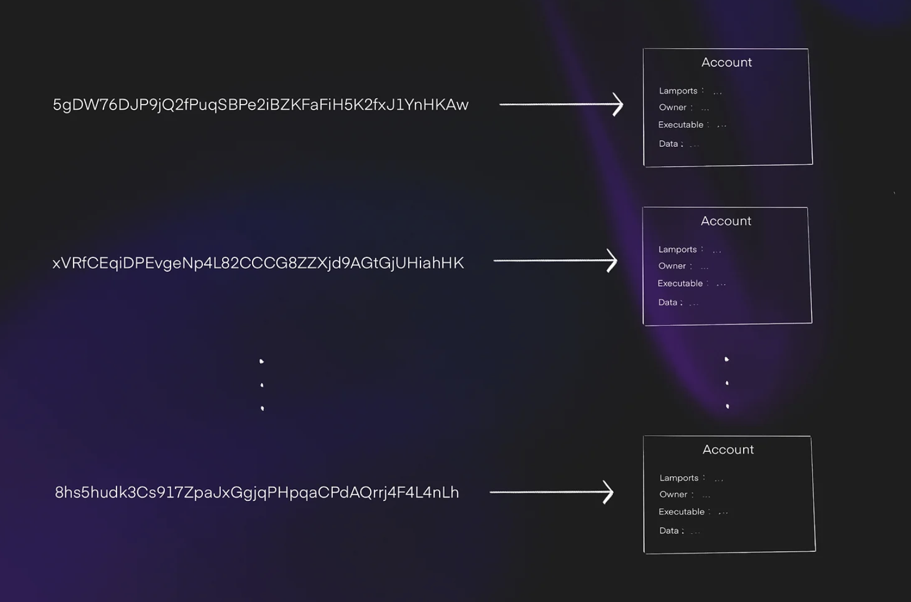
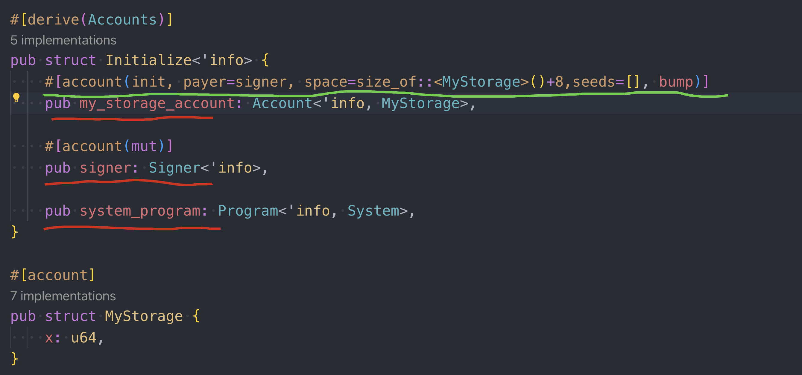
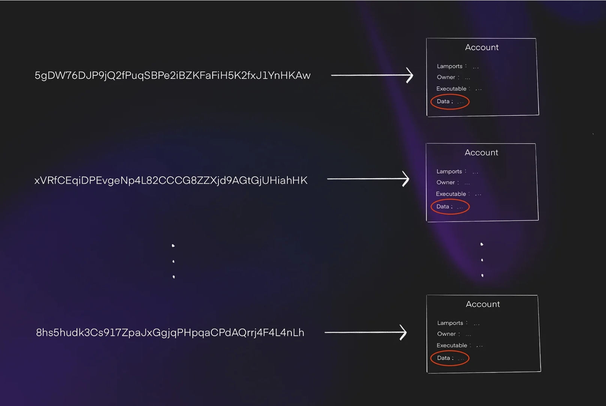
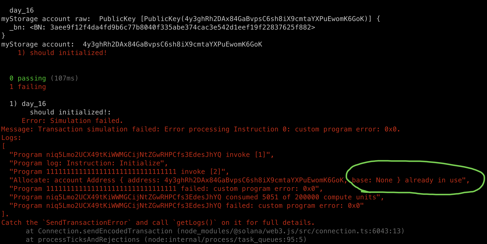

Accounts Overview
Up until this point, none of our tutorials have used storage variables or store anything permanent.
Firstly, both ethereum and solana store data in the pattern of key-value.
Storage slots in Ethereum are effectively a massive key-value store:
{
key: [smart_contract, storage solt] // 32 bytes, solts up to: 2^256
value: 32_byte_slot // 32 bytes storage for each key
}
for example:
contract Example {
uint256 public var1; // Stored in slot 0
uint256 public var2; // Stored in slot 1
}
Solana's model is similar, it's a massive key-value store where the "key" is a base58 encoded address and the value is a data blob that can be up to 10MB large(or optionaly hold nothing).It can be visualized as follows:
{
// key is a base58 encoded 32 byte sequence
key: ETnqC8mvPRyUVXyXoph22EQ1GS5sTs1zndkn5eGMYWfs
value: {
data: 020000006ad1897139ac2bdb67a3c66a...
// other fields are omitted
}
}
How does ethereum store
In Ethereum there are two ways to store onchain data:
- store in current sc. (sc stands for smart contract): this is the basic way we store data, it's convinent and easy to maintain, but it's costly due to the keyword it uses:
SSTORE. - store in another sc: this is so call
exotic design pattern, this will need us to deploy a dedicated sc used to store data only, and be interacted with the main sc by using:SSTORE2orSSTORE3, it's gas efficient yet need more advance techniques.
Here is a example: storate.sol:
// SPDX-License-Identifier: MIT
pragma solidity ^0.8.0;
contract DataStorage {
// The data is stored in the contract's bytecode
constructor(bytes memory _data) {
assembly {
return(add(0x20, _data), mload(_data))
}
}
}
main.sol
// SPDX-License-Identifier: MIT
pragma solidity ^0.8.0;
contract MainContract {
address public dataStorageAddress;
function storeData(bytes memory data) external {
// Deploy the DataStorage contract with the data embedded in the bytecode
address newDataStorage;
assembly {
newDataStorage := create(0, add(data, 0x20), mload(data))
}
// Save the address of the deployed contract
dataStorageAddress = newDataStorage;
}
function retrieveData() external view returns (bytes memory) {
uint256 size;
bytes memory retrievedData;
// Get the size of the bytecode at the dataStorageAddress
assembly {
size := extcodesize(dataStorageAddress)
}
// Copy the bytecode into memory
retrievedData = new bytes(size);
assembly {
extcodecopy(dataStorageAddress, add(retrievedData, 0x20), 0, size)
}
return retrievedData;
}
}
Below illustrates the basic Account Model of Ethereum:
(mermaid source code below)
graph TD
A[Block Header] --> B[State Root]
B --> C["Global State Trie - Merkle Patricia Trie Root"]
%% Account A (Smart Contract)
C --> D[Account A]
D --> E[Nonce: 5]
D --> F[Balance: 10 ETH]
D --> G["Storage Root: 0xghi789..."]
D --> H["Code Hash: 0xdef456..."]
%% Storage Trie for Account A
G --> I["Storage Trie Root: 0xghi789..."]
I --> J["Key 1: Value 1"]
I --> K["Key 2: Value 2"]
%% Account B (EOA)
C --> L[Account B EOA]
L --> M[Nonce: 3]
L --> N[Balance: 20 ETH]
L --> O["Storage Root: N/A"]
L --> P["Code Hash: N/A"]
- Account A is a sc, it's data sotres under hash: 0xghi789...
- Account B is a EOA, no storage at all.
How does solana store
In Solana, the data is stored in a separated sc(we call Account) by design rather a exotic design patter.
Everything is an account in solana and can potentially hold data. Sometimes we refer to one account as a program account or another account as a storage account, and the only difference is whether the executeable flag is set to true and how we intend to use the data field of the account.

In the image below, we see the accountB is owned by the program accountA. We know A is a program account because it's executeable field is set to true. This indicateds that the data field of B will be storing data for A:

A basic storage example
Let's translate the following solidity code to solana:
contract BasicStorage {
Struct MyStorage {
uint64 x;
}
MyStorage public myStorage;
function set(uint64 _x) external {
myStorage.x = _x;
}
}
it seems strange that we wrapped a single variable in a struct.
but in solana programs, particularly, all storage, or rather account data, is treated as a struct. The reason is due to the flexibility of the account data. Since accounts are data blobs which can be quite large(10MB), we need some structure to interpret the data, otherwise it is just a sequence of bytes with no meaning.
Behind the scenes, Anchor deserializeds and serializes account data into structs when we try to read or write the data.
Account initialization
In Ethereum, we can directly write to a storage variable that we have't used before. However, Solana programs need an explicit initialization transaction. That is, we have to create the account before we can write data to it.
anchor new day_16
regarding to the basic storage code above, here is how it looks like in solana: (day_16/src/lib.rs)
use anchor_lang::prelude::*;
use std::mem::size_of;
declare_id!("niq5Lmo2UCX49tKiWWMGCijNtZGwRHPCfs3EdesJhYQ");
#[program]
pub mod day_16 {
use super::*;
pub fn initialize(ctx: Context<Initialize>) -> Result<()> {
Ok(())
}
}
#[derive(Accounts)]
pub struct Initialize<'info> {
#[account(init, payer=signer, space=size_of::<MyStorage>()+8,seeds=[], bump)]
pub my_storage_account: Account<'info, MyStorage>,
#[account(mut)]
pub signer: Signer<'info>,
pub system_program: Program<'info, System>,
}
#[account]
pub struct MyStorage {
x: u64,
}
we add three variables to the Initialize struct, let go through them one-by-one:

- my_storage_account: this is where the initialization begins, it's an Account type with struct MyStorage. 'info is a keyword of Rust lifetime, we can ignore it for now.
- #[account(init,...]: The attribute macro above the my_storage_account is how Anchor knows this tx is intended to initialize this account, the important keyword here is
init.payer: the account pays the SOL for allocating storage. PLEASE NOTE it's specified to bemutcos it's account balance will change, we set this to signer.space: this indicates how much space the account will take, here we use the built-in function:std::mem::size_ofto calculate. The +8 we will discuss later.seeds: A program can own multiple accounts, it disctriminates among the accounts with theseedwhich is used in calculating a discriminator. The discriminator takes up 8 bytes, which is why we need to allocate the additional 8 bytes in addition to the space our struct takes up.bump: can be treated as boilerplate for now.
- system_program: this is a built-in program of Solana will account for SOL transfer, it's always part of the initialization txs(we will elaborate it in later chapters).
- MyStorage struct: recall the data field inside the solana account.

under the hood, this is a byte sequence and store in the data field. Solana doesn't force us to use struct to use Solana accounts, but this is the convention, we don't have any reason don't use.
Test Initialization
import * as anchor from "@coral-xyz/anchor";
import { Program } from "@coral-xyz/anchor";
import { Day16 } from '../target/types/day_16';
describe("day_16", () => {
anchor.setProvider(anchor.AnchorProvider.env());
const program = anchor.workspace.Day16 as Program<Day16>;
it("should initialized!", async () => {
const seeds = []
const [myStorage, _bump] = anchor.web3.PublicKey.findProgramAddressSync(seeds, program.programId);
console.log('myStorage account raw: ', myStorage);
console.log('myStorage account: ', myStorage.toBase58());
await program.methods.initialize().accounts({
myStorageAccount: myStorage
}).rpc();
})
})
result:

Solana requires us to specify in advance the accounts a transaction will interact with, that's why we compute the address of the account that stores MyStorage struct in the test code.
Note the seeds is an empty array, just like it is in the Anchor program.
Account cannot be initialize twice
if we could reinitialize an account, that would be highly problematic since a user could wipe data from the syste! Thankfully, Anchor defends against this in the background.
if you run above test case again, you will get the error screenshotted below:

we can solve this by run command:
solana-test-validator --reset
Predicting the account address in Solana
In Ethereum, the address of a contract created using create2 is dependent on:
- the address of the deployer
- a salt
- the bytecode of the created contract.
In Solana, it's pretty the same as in Ethereum except that it ignores the bytecode, specifically, it depends on:
- the program that owns the storage account, (here is day_16, which is anki to the deployer).
- the seeds(which is akin to create2's salt)
In all the examples in this tutorial, seeds is an empty array, but we will explore non-empty arrays in the following tutorial.
Key Takeaways
- Solana uses accounts to store data, and each account must be initialized before it can be used.
- Once initialized, an account cannot be reinitialized
- A common way to structure the data within an account is by using a struct.
Links
- original article: https://www.rareskills.io/post/solana-initialize-account
- source code: https://github.com/dukedaily/solana-expert-code/tree/day_16